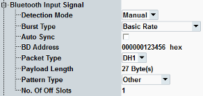
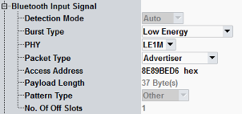
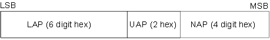
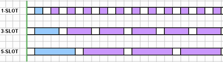

The "Bluetooth Input Signal" parameters define basic Bluetooth signal properties. In "Manual" detection mode, the values in this section must be set in accordance with the measured signal; see "Measuring a Bluetooth Signal". If "Auto" detection mode is selected, only the "Burst Type" and - for BR and EDR signals - the "BD Address" must be set; the remaining parameters are detected automatically.


- In "Manual" detection mode, the burst analysis is based on the input signal settings. The R&S CMW checks the properties of the analyzed burst. Measurement results are calculated if the properties are in accordance with the input signal settings.
Manual input signal settings provide the fastest measurement. It is the recommended mode of operation in factory testing. - In "Auto" detection mode, the R&S CMW only uses the selected "Burst Type". The remaining signal properties are established during the burst analysis; input signal settings are ignored. Automatic detection mode is indicated in the upper right corner of measurement views as "(auto)". The results of the burst analysis are displayed in the "Power Scalars" and "Modulation Scalars" views.
In this mode, you can reconfigure the Bluetooth signal during the measurement without adjusting the input signal settings.
Automatic detection of Bluetooth bursts is not supported in list mode.
The following table lists the parameters configured in "Manual" and "Auto" detection mode.
Burst type | Manual setting | Auto detection |
|---|---|---|
BR | Bluetooth device address1), packet type, pattern type, payload length, No. of OFF slots2) | Bluetooth device address1) |
EDR | Bluetooth device address1), packet type, pattern type, payload length, No. of OFF slots3) | Bluetooth device address1) |
LE: LE 1M PHY (uncoded) | 4)Packet type, sync word, pattern type, payload length, No. of OFF slots2) | 4)Packet type, sync word/ access address |
LE: LE 2M PHY (uncoded) | Sync word, pattern type, payload length, No. of OFF slots2) | Sync word |
LE: coded PHY | Coding type, sync word, pattern type, payload length | Sync word |
1) only when "Auto Sync" is disabled 2) only when full Bluetooth band ACP measurement is enabled 3) only when full Bluetooth band gated ACP measurement is enabled 4) advertiser and data packets are only supported in automatic detection mode | ||
Option R&S CMW-KM611 is required for LE 1M PHY (uncoded). For LE 2M PHY and LE coded PHY, option R&S CMW-KM721 is also required.
In the standalone (SA) scenario, this parameter is controlled by the measurement. In the combined signal path (CSP) scenario, it is controlled by the signaling application.
Commands FETCh:BLUetooth:MEAS:ISIGnal:ADETected:..., refer to "Detected Signal Characteristics".
Fixed value Automatic (CSP)
- In "Basic Rate" (BR) mode the R&S CMW measures DH1, DH3, or DH5 packets.
- If "Enhanced Data Rate" (EDR) mode is selected, the R&S CMW measures one of the 2-DHx or 3-DHx packet types.
- In "Low Energy" (LE) mode, the R&S CMW measures LE test packets and for LE 1M PHY also advertiser packets.
For more information, refer to the list of BR and EDR packet types in "Packet Type" and to "LE Test Packets".
Option R&S CMW-KM610 is required for BR and EDR.
Option R&S CMW-KM611 is required for LE.
In the standalone (SA) scenario, this parameter is controlled by the measurement. In the combined signal path (CSP) scenario, it is controlled by the signaling application.
Disables / enables automatic synchronization to the captured signal for an unspecified Bluetooth device address.
Remote command:For BR and EDR packets, the BD address specifies the Bluetooth device address of the EUT's piconet. BD addresses are 48-bit (12-digit hex) numbers and consist of the three subfields LAP (lower address part), UAP (upper address part) and NAP (non-specific address part).

The synchronization word is derived from the LAP; it must be known to detect captured bursts. The R&S CMW does not evaluate the other two parts of the received "BD Address", so it is sufficient to enter a six-digit hexadecimal number.
Note: Separate address field settings. The "Input Signal > BD Address" hotkey provides another possibility to set the LAP, UAP, and NAP.
In the standalone (SA) scenario, this parameter is controlled by the measurement. In the combined signal path (CSP) scenario, it is controlled by the signaling application.
Automatic configuration (CSP)
Selects transmitter or loopback test mode.
This parameter is only available in the combined signal path (CSP) scenario for burst type BR or EDR. It is controlled by the signaling application.
Remote command:Selects the physical layer used for LE connections.
Note that the advertiser packet measurement is supported only at LE 1M PHY.
Option R&S CMW-KM611 is required for LE 1M PHY (uncoded). For LE 2M PHY and LE coded PHY, option R&S CMW-KM721 is also required.
In the standalone (SA) scenario, this parameter is controlled by the measurement. In the combined signal path (CSP) scenario, it is controlled by the signaling application.
Specifies the packet type of the measured signal. The supported packet types are listed below, together with the payload length for each packet. The length of a standard Bluetooth time slot is 625 µs.
Burst type | Packet type | Timeslots | Payload length1) in byte |
|---|---|---|---|
BR | DH1 | 1 | 0 to 27 |
DH3 | 3 | 0 to 183 | |
DH5 | 5 | 0 to 339 | |
EDR | 2-DH1 | 1 | 0 to 54 |
2-DH3 | 3 | 0 to 367 | |
2-DH5 | 5 | 0 to 679 | |
3-DH1 | 1 | 0 to 83 | |
3-DH3 | 3 | 0 to 552 | |
3-DH5 | 5 | 0 to 1021 | |
LE | LE test packet (RF_PHY_TestRef) | 2) | 0 to 255 |
Advertising packet3) | 1 | 6 to 37 | |
Data packet3) | 1 | 0 | |
1) The payload length in the table denotes the number of user payload bytes. 2) The transmission interval depends on the length of LE burst. 3) Only supported with LE 1M PHY (uncoded) and automatic detection mode. | |||
Option R&S CMW-KM610 is required for BR or EDR measurements. Option R&S CMW-KM611 is required for LE 1M PHY (uncoded). For LE 2M PHY and LE coded PHY, option R&S CMW-KM721 is also required.
Auto detection mode:
Defines 4-byte synchronization word for direct test mode as hexadecimal number.
This parameter is only available for LE test packet type (RF_PHY_TestRef).
Option R&S CMW-KM611 is required for LE 1M PHY (uncoded). For LE 2M PHY and LE coded PHY, option R&S CMW-KM721 is also required.
In the standalone (SA) scenario, this parameter is controlled by the measurement. In the combined signal path (CSP) scenario, it is controlled by the signaling application.
Specifies the access address of LE advertiser. This parameter is only relevant for advertisers in LE 1M PHY (uncoded).
Option R&S CMW-KM611 is required.
Remote command:Auto detection mode:
Defines the forward error correction (FEC) coding for connections with LE coded packets. FEC coding is defined in the core specification version 5.0 for Bluetooth wireless technology, volume 6, part B, section 3.3.
Option R&S CMW-KM721 is required.
In the standalone (SA) scenario, this parameter is controlled by the measurement. In the combined signal path (CSP) scenario, it is controlled by the signaling application.
Auto detection mode:
Specifies the number of payload bytes (octets) in the measured packets. The value range depends on the packet type.
Option R&S CMW-KM610 is required for BR or EDR measurements. Option R&S CMW-KM611 is required for LE 1M PHY (uncoded). For LE 2M PHY and LE coded PHY, option R&S CMW-KM721 is also required.
In the standalone (SA) scenario, this parameter is controlled by the measurement. In the combined signal path (CSP) scenario, it is controlled by the signaling application.
Auto detection mode:
Specifies the data pattern type that the EUT transmits as user payload data on its BR or LE packets. In the standalone scenario, there is no equivalent setting for EDR packets.
Some of the modulation results for BR, LE 1M PHY and LE 2M PHY require a '11110000' or a '10101010' pattern; see "Modulation Measurements" and "Modulation Measurements LE Uncoded PHY". Any other pattern type causes invalid results.
"Alternating" pattern alternates periodically a '11110000' and a '10101010' pattern.
Measurements on LE coded PHY (S = 8) require a '11111111' pattern, see "Modulation Measurements LE Coded PHY S = 8".
Option R&S CMW-KM610 is required for BR or EDR measurements. Option R&S CMW-KM611 is required for LE 1M PHY (uncoded). For LE 2M PHY and LE coded PHY, option R&S CMW-KM721 is also required.
In the standalone (SA) scenario, this parameter is controlled by the measurement. In the combined signal path (CSP) scenario, it is controlled by the signaling application.
Auto detection mode:
Specifies the number of unused slots between any two occupied slots or slot sequences. You can define independent off slot settings for all supported packet types.
The example below shows a signal configuration with 1-slot (e.g. DH1, 2-DH1), 3-slot, and 5-slot packets and one off slot (white).

The "No. of Off Slots" setting is only relevant for multi-shot ACP measurements, i.e. ACP measurement mode: "ACP 79 Channels" for BR/EDR or "LE All Channels" in manual detection mode. See also "ACP Measurement Mode".
The Bluetooth LE transmission interval depends on the number of payload bytes, see "Trace Points for Low Energy". For "LE All Channels" ACP measurements, it is recommended to set the number of "off" slots to be the same as the number of "on" slots.
Option R&S CMW-KM610 is required for BR or EDR measurements. Option R&S CMW-KM611 is required for LE 1M PHY (uncoded). For LE 2M PHY and LE coded PHY, option R&S CMW-KM721 is also required.
In the standalone (SA) scenario, this parameter is controlled by the measurement. In the combined signal path (CSP) scenario, it is controlled by the signaling application.
Auto detection mode:
Automatic configuration (CSP)
Configures test mode settings.
These parameters are available in the combined signal path (CSP) scenario only. They are controlled by the signaling application.
Remote command: